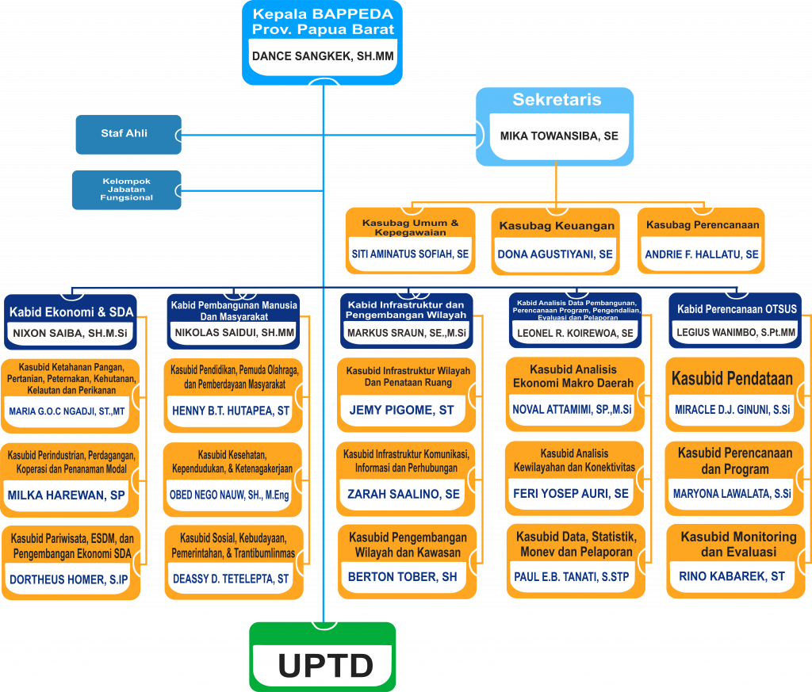

Berikut ini adalah tabel rekapitulasi perbandingan jumlah eselonering tiap propinsi tahun 2019.
Status jumlah PNS yang telah PTDH TIPIKOR berdasarkan kesepakatan Kemendagri,
Kemenpan RB dan BKN per tanggal 26 November 2019 dapat dilihat pada file
berikut.
Download